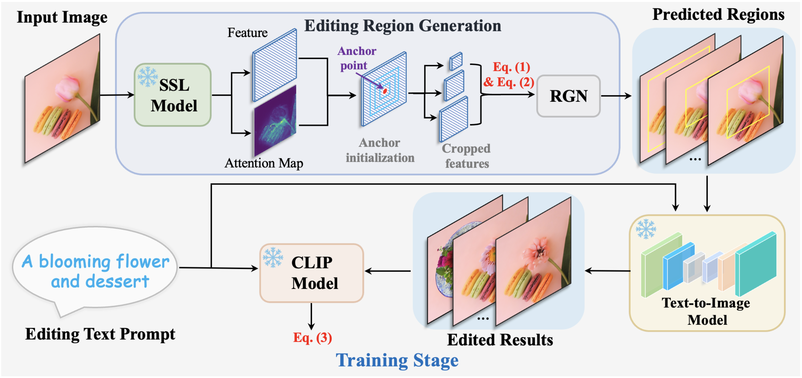
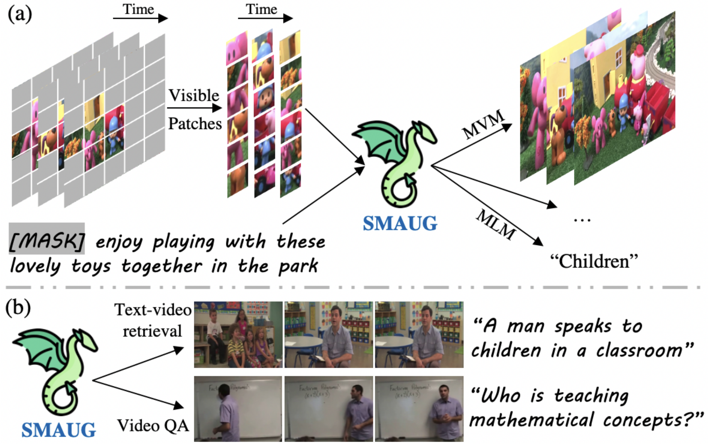
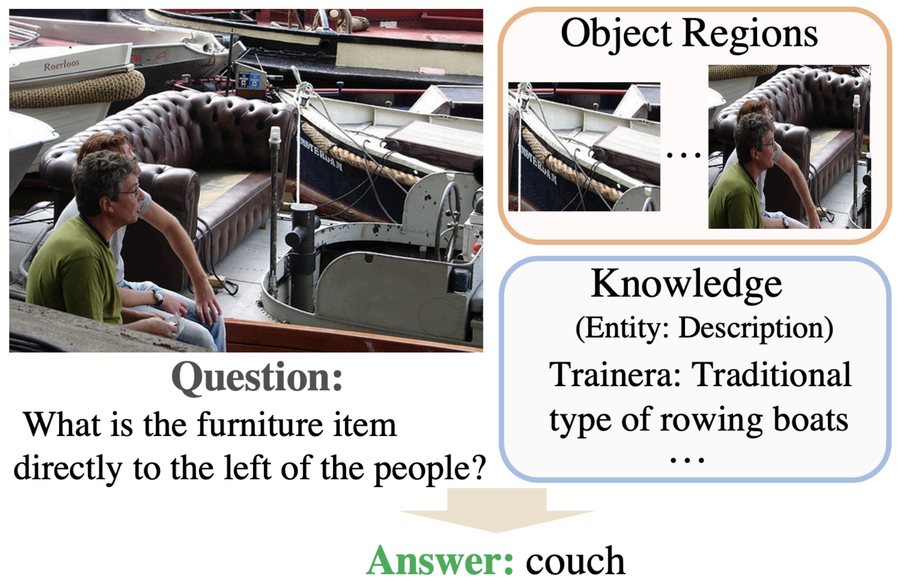
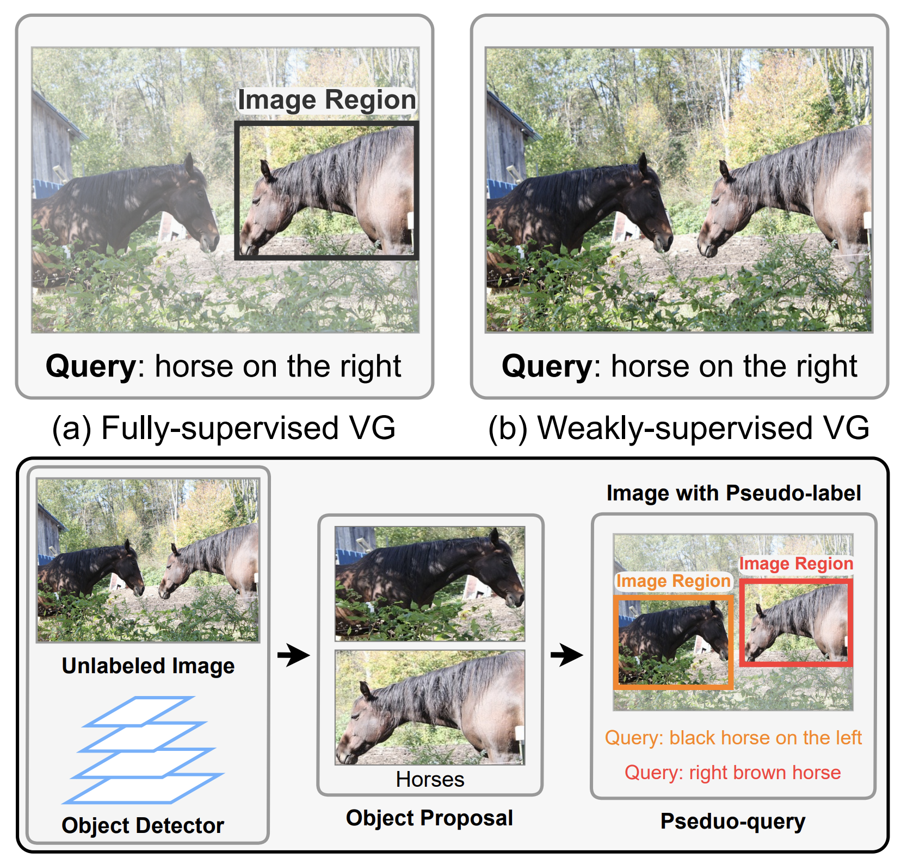
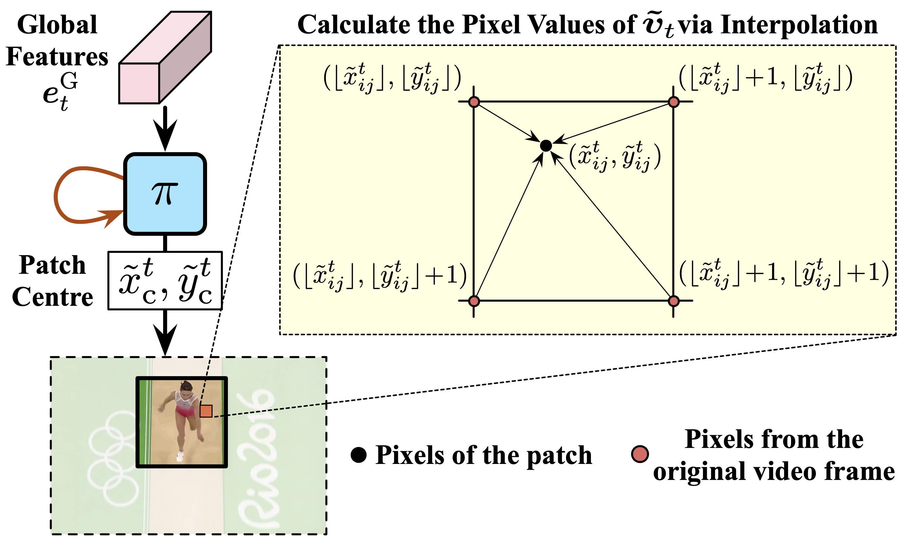
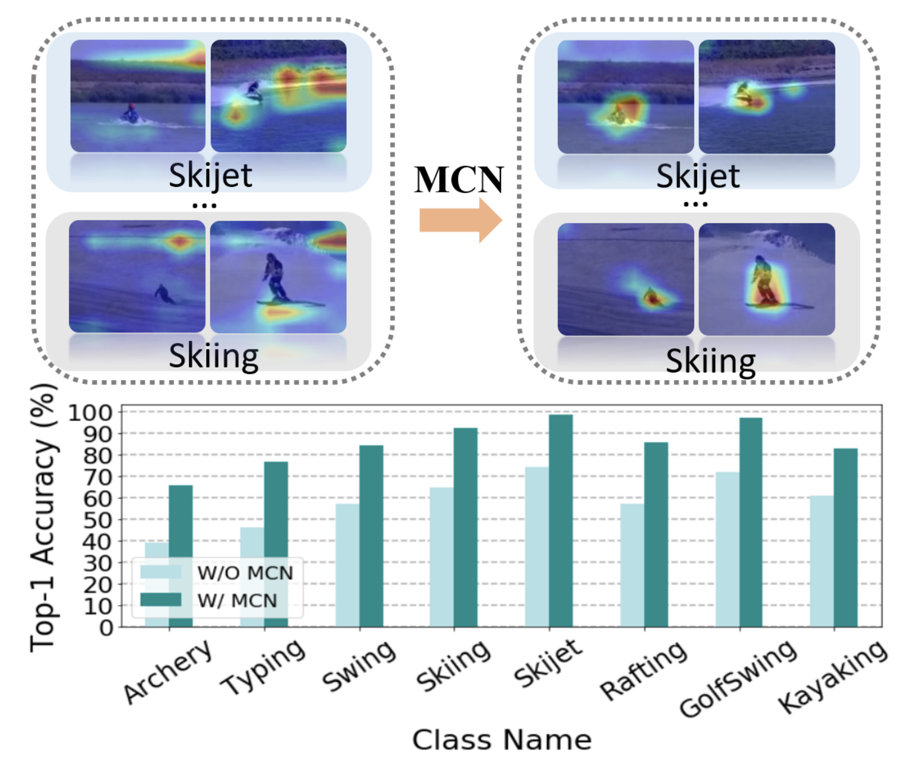
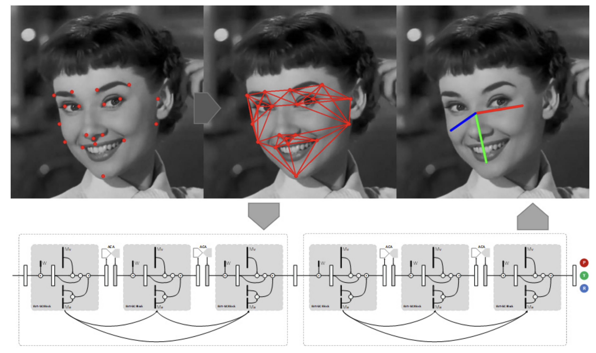

|
Yuanze Lin I am a first-year DPhil student in the Computer Science department at University of Oxford, where I work with Prof. Ronald Clark, focusing on text-to-3d and vision-language models. Before going to Oxford, I spent great time at Microsoft Redmond, MSRA, CCVL @ Johns Hopkins University, Tsinghua University, etc. I'm so lucky to work with Dr. Xun Guo and Dr. Yan Lu at MSRA, Prof. Gao Huang at Tsinghua University, Dr. Yujia Xie, Dr. Dongdong Chen and Dr. Yichong Xu at Microsoft Redmond, Prof. Cihang Xie and Prof. Alan Yuille at Johns Hopkins University, Dr. Yi-Hsuan Tsai and Prof. Ming-Hsuan Yang at UC Merced. My research interest lies in computer vision and machine learning, with an emphasis on self-supervised learning, multimodal learning, and large language models. Feel free to email me for research discussion : ) Currently, I'm open to 2024 winter and summer research internships, especially about text-to-3d and vision-language models. yuanze.lin [at] cs.ox.ac.uk / Google Scholar / Github / LinkedIn |
{kind=link}
News[11/2023] A new work Text-Driven Image Editing via Learnable Regions has been released. [10/2023] Started my PhD journey at CS @ University of Oxford. [07/2023] SMAUG accepted to ICCV 2023. [09/2022] REVIVE accepted to NeurIPS 2022. [03/2022] Pseudo-Q and AdaFocus V2 accepted to CVPR 2022. [07/2021] MCN accepted to ICCV 2021. [06/2021] EVA-GCN accepted to CVPR 2021 AMFG Workshop and won Best Paper Award. |
ResearchI'm particularly interested in computer vision, especially about how to efficiently utilize images and texts for pre-training or solving various multimodal tasks. Papers are sorted by recency. (* denotes equal contribution) |
|  |
Text-Driven Image Editing via Learnable Regions
Yuanze Lin, Yi-Wen Chen, Yi-Hsuan Tsai, Lu Jiang, Ming-Hsuan Yang ArXiv, 2023 ArXiv / Project Page / Video / Code / BibTex Introduce a region-based editing network that is trained to generate editing regions utilizing a text-driven editing loss with CLIP guidance, our method can edit the given images based on freely provided language descriptions. |
|  |
SMAUG: Sparse Masked Autoencoder for Efficient Video-Language Pre-training
Yuanze Lin, Chen Wei, Huiyu Wang, Alan Yuille, Cihang Xie ICCV, 2023 ArXiv / Poster / Slides / BibTex Propose an efficient multimodal pre-training framework, which enjoys both competitive performances on text-to-video retrieval and video question answering tasks, and much less pre-training costs by 1.9X or more. |
|  |
REVIVE: Regional Visual Representation Matters in Knowledge-Based Visual Question Answering
Yuanze Lin, Yujia Xie, Dongdong Chen, Yichong Xu, Chenguang Zhu, Lu Yuan NeurIPS, 2022 ArXiv / Poster / Supplementary Material / OpenReview / Code / BibTeX Propose a new knowledge-based VQA method REVIVE, which utilizes the explicit information of object regions not only in the knowledge retrieval stage but also in the answering model. It achieves a new state-of-the-art performance on OK-VQA dataset. |
|  |
Pseudo-Q: Generating Pseudo Language Queries for Visual Grounding
Yuanze Lin*, Haojun Jiang*, Dongchen Han, Shiji Song, Gao Huang CVPR, 2022 ArXiv / Poster / Code / BibTeX Present Pseudo-Q to automatically generate pseudo language queries for supervised training, which achieves superior or comparable performance compared to existing weakly-supervised visual grounding methods on five datasets. |
|  |
AdaFocus V2: End-to-End Training of Spatial Dynamic Networks for Video Recognition
Yulin Wang*, Yang Yue*, Yuanze Lin, Haojun Jiang, Zihang Lai, Victor Kulikov, Nikita Orlov, Humphrey Shi, Gao Huang CVPR, 2022 ArXiv / Code / BibTeX Reformulate AdaFocus as a simple one-stage algorithm by introducing a differentiable interpolation-based patch selection operation and further present an improved training scheme. Extensive experiments on six benchmark datasets demonstrate its effectiveness. |
|  |
Self-supervised video representation learning with meta-contrastive network
Yuanze Lin, Xun Guo, Yan Lu ICCV, 2021 ArXiv / Poster / BibTeX Propose a Meta-Contrastive Network (MCN), which combines contrastive learning and meta learning. For video action recognition and video retrieval tasks, MCN outperforms state-of-the-art approaches on UCF101 and HMDB51 datasets. |
|  |
EVA-GCN: Head Pose Estimation Based on Graph Convolutional Networks
Miao Xin, Shentong Mo, Yuanze Lin CVPR AMFG Workshop, 2021 (Best Paper Award) Paper / Code / BibTeX Construct a landmark-connection graph, and propose to leverage the Graph Convolutional Networks (GCN) to model the complex nonlinear mappings between the graph typologies and the head pose angles. |
{kind=link}
{kind=link}
|
|
UC Merced
Visiting Student, May 2022 - Nov 2023 Supervised by Dr. Yi-Hsuan Tsai and Prof. Ming-Hsuan Yang, work on text-driven image editing | |
|
|
Alibaba Group
Senior Algorithm Engineer, Feb 2023 - Aug 2023 Work on multimodal pre-training/fine-tuning and large language models (LLMs) |
|
|
Johns Hopkins University (CCVL)
Research Assistant, May 2022 - Feb 2023 Supervised by Prof. Cihang Xie and Prof. Alan Yuille, work on efficient multimodal pre-training based on MAE |
| |
Microsoft Redmond Researcher Intern, Feb 2022 - June 2022 Supervised by Dr. Yujia Xie, Dr. Dongdong Chen and Dr. Yichong Xu, work on knowledge-based VQA |
| |
Tsinghua University Research Assistant, Sep 2021 - Mar 2022 Supervised by Prof. Gao Huang, work on visual grounding and efficient video recognition |
| |
Microsoft Research Asia Researcher Intern, Dec 2020 - Sep 2021 Supervised by Dr. Xun Guo and Dr. Yan Lu, work on self-supervised learning and transformers for video tasks |
|
Tencent AI Lab Researcher Intern, Sep 2020 - Dec 2020 Supervised by Dr. Haozhi Huang, work on text-based editing of videos based on meta learning |
ServicesConference Reviewer: ICRA 2024, CVPR 2024 Conference Reviewer: ICLR 2023, CVPR 2023, ICCV 2023, NeurIPS 2023 Conference Reviewer: CVPR 2022 |
|
No web trackers, feel free to see this website. Last Update: 12/2023 Template |